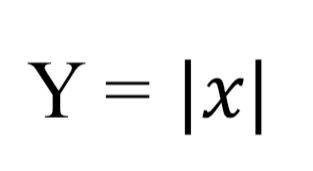
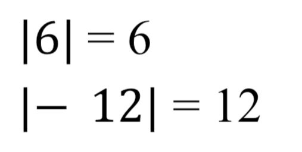
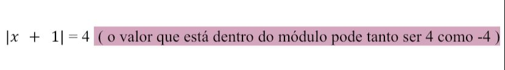
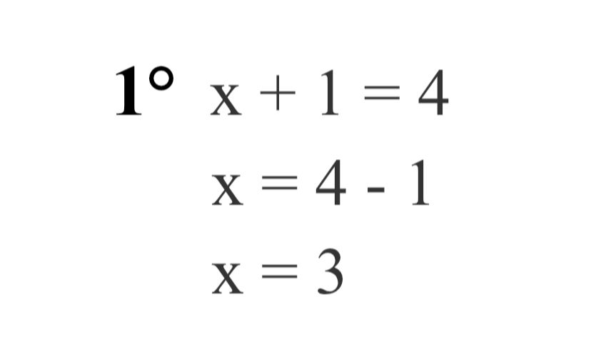
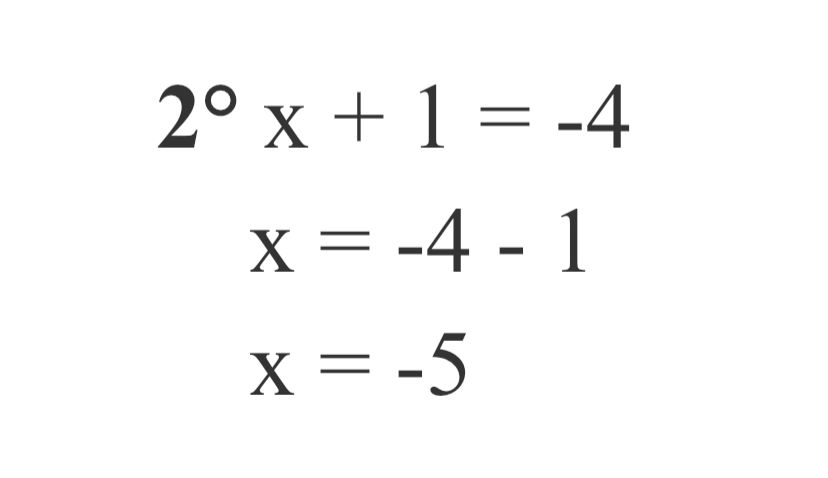
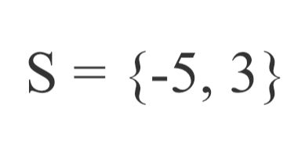

O que é Equação Modular?
Equação Modular é quando na equação, a incógnita está dentro do módulo
Antes precisamos saber que: quando o valor dentro do módulo foi positivo, continua positivo, e quando for negativo, vai ser o seu oposto, ou seja, positivo.
Vejamos um exemplo:
Então teremos duas possibilidades:
1° Possibilidade:
2° Possibilidade:
Então, a solução é:
O motivo pelo qual eu escolhi esse conteúdo: admito que funções modulares foi um conteúdo um pouco mais complicado de aprender, requer muita atenção, mas depois fica mais fácil de compreender.